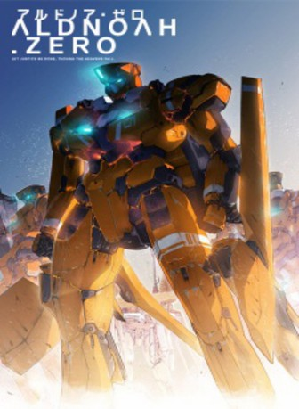

")
 
 IMDB-Wertung: 7.3 / 10
IMDB-Wertung: 7.3 / 10  Metascore:
Metascore: 
Im Jahr 1972 entdeckte die Apollo-17-Mission auf der Oberfläche des Mondes ein Hypergate. Durch dieses enorm schnelle Transportmittel ist es möglich, in kurzer Zeit zum Mars zu reisen.Schnell fühlen sich beide Seiten bedroht und ein Krieg bricht zwischen der Menschheit und den Marsianern aus. Soldaten steigen in gigantischen Stahlrobotern vom Himmel herab, mit nur einem Ziel: Der Vernichtung der Menschheit.
Jahr: 2014
Dauer: 24 Minuten
FSK:
Land: Japan Studio: Aniplex AmericaTonspuren: DD2.0 - ,
Untertitel: Deutsch,
Auflösung: 720p (1280x720) Größe: 243 MB
Genre: Action, Sci-Fi, Animation/Trick, TV-Serie
Regisseur: Ei Aoki, Lex Lang
Drehbuch: Gen Urobuchi, Katsuhiko Takayama
Soundtrack:
Darsteller:
 Sandy Fox als Eddelrittuo
Sandy Fox als Eddelrittuo Matthew Mercer als Koichiro Marito
Matthew Mercer als Koichiro Marito Max Mittelman als Inaho Kaizuka
Max Mittelman als Inaho Kaizuka Robbie Daymond als Count Mazuurek
Robbie Daymond als Count Mazuurek Lex Lang als Cruhteo
Lex Lang als Cruhteo Todd Haberkorn als Trillram
Todd Haberkorn als Trillram Michael McConnohie als Rayregalia Vers Rayvers
Michael McConnohie als Rayregalia Vers Rayvers Christine Marie Cabanos als Nina Klein
Christine Marie Cabanos als Nina Klein Kirk Thornton als Saazbaum
Kirk Thornton als Saazbaum Dave Mallow als Various
Dave Mallow als Various Patrick Seitz als Vlad
Patrick Seitz als VladDatei: X:\HD-Anime-Serien\Aldnoah Zero\Aldnoah Zero E01 Princess of VERS.mkv seit 15.01.2016
Festplatte: Gemischt-01+Anime
 Es gibt insgesamt 67 Filme in der Gruppe 'HD-Anime-Serien'
Es gibt insgesamt 67 Filme in der Gruppe 'HD-Anime-Serien'